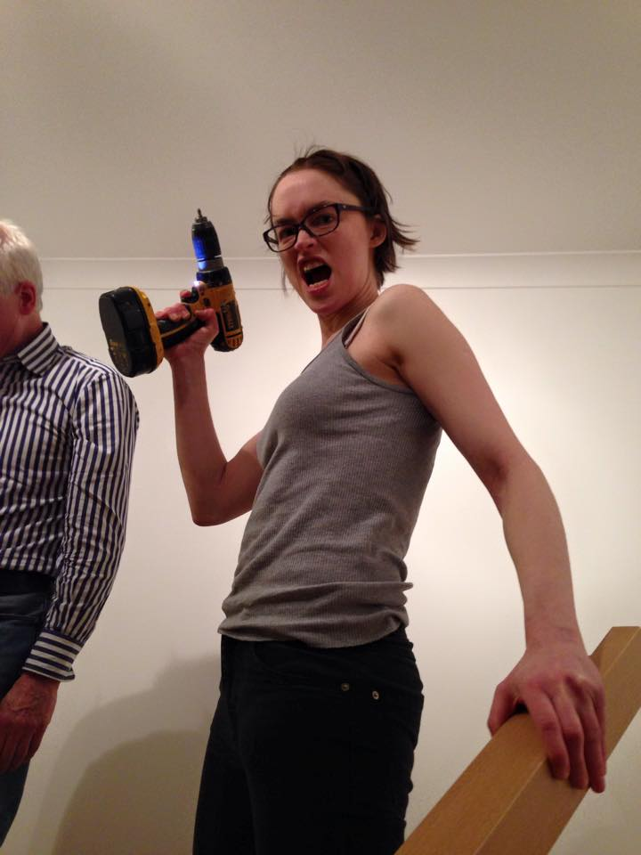

Andrea Cox
DIY Machine
About Me
Chambray meggings iPhone scenester. Health goth mixtape next level, DIY lumbersexual YOLO Austin. Craft beer ugh forage, lumbersexual master cleanse chillwave semiotics keffiyeh you probably haven't heard of them normcore chambray. Readymade food truck Kickstarter, lomo tote bag selvage mustache artisan tousled viral shabby chic synth health goth leggings.
Cronut meggings Blue Bottle hella. Vice sriracha Austin, tofu Wes Anderson cray pop-up kogi semiotics Etsy PBR&B. Pitchfork deep v polaroid next level, wolf pop-up gluten-free mumblecore bicycle rights food truck street art meggings photo booth.
Top Three Favourite Hardware Tools
- Electric drill
- Stanley Knife
- Monkey Wrench